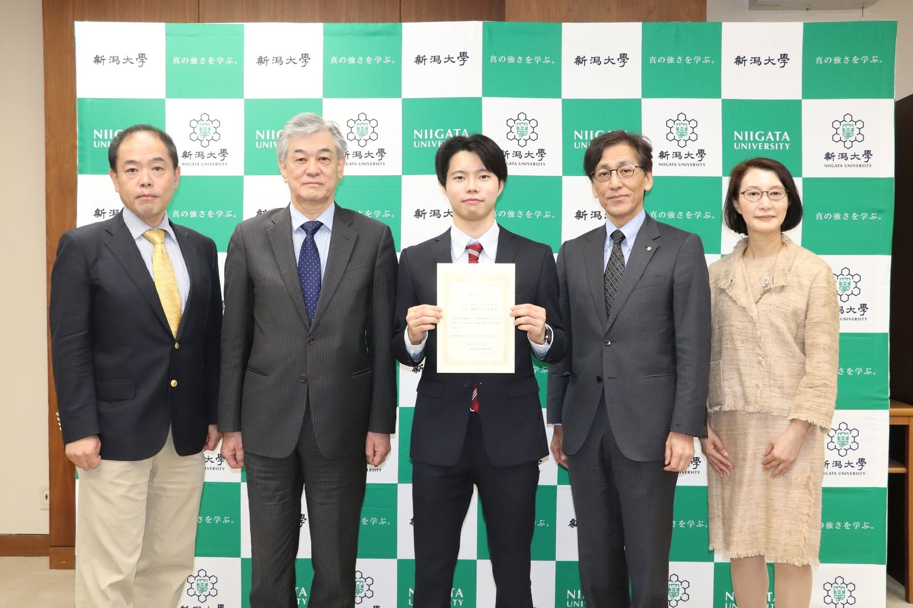

この度、弊社（生成AIイノベーション合同会社）は、2026年10月19日付で「新潟大学発ベンチャー称号認定制度」により新潟大学発ベンチャー第15号に認定され、新潟大学学長応接室にて称号記を授与されました。

認定の背景について
「新潟大学発ベンチャー称号認定制度」は、新潟大学で生まれた研究成果や知見を実社会に還元することを目的に設立された企業を認定・支援する制度です。
弊社は、代表の中川が新潟大学で学んできた技術経営（MOT）の知識や、生成AIの評価・ガバナンスに関する研究活動を基盤として設立いたしました。大学での研究や日々の実践を通じて培った知見を、地域の企業や団体の皆様の現場で役立つ形にしてお届けしてまいります。
新潟大学 社会連携推進機構のウェブサイトにて、認定企業の紹介ページが公開されています。詳しくはこちらをご確認ください。
代表社員 中川 碧偉 よりコメント
「高校生の頃から起業したいという思いがあり、新潟大学での学びや経験のすべて、そしてAIに関する研究活動が、今のこの会社につながっています。これまで支えてくださった皆様に感謝しつつ、これからも地域の皆様の力になれる会社を目指してまいります。」